don`t worry, Be Happy !

| |
don`t worry, Be Happy ! |
|
|
23-24 июля 2005. Тальцинский - Теплое озеро .
Сбор был в доме Барышниковых. Собирались долго и выехали
после полудня на микроавтобусе Жени. Еще был заезд по делам в Байкальск,
и дорога до турбазы Снежная. На турбазе народу тьма, очередь перед шлагбаумом.
Дальше больше - все полянки заняты, люди живут возле машин и возле дороги,
в китайских палатках. Полуголые и полупьяные ходят на озеро купаться.
Для горожан и такая "природа" в кайф, но для жителей приБайкальской
и приХамарДабанской Слюдянки, вооруженных рюкзаками, есть только один
путь - в гору ! 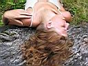 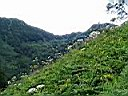 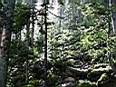 На подъеме мокрая трава в рост человека, чувствуем себя как в джунглях - мокро и пар валит. Доходим до тотема "Бабы и мужик" и примечаем новенький балаган, такой хороший, что решаем дальше не идти и даже хуже - не ставить новую палатку Жени. Выглядывает солнце, от него склоны становятся изумрудными и появляется радуга. Сергей занимается костром, Женя дровингом, Инга кукингом, Валя и я ходим по воду, на тропе наступаем в муравейник и оказываемся нещадно покусаными. 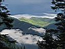 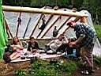 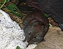 Парень и девушка спускается сверху и радостно сообщает, что были на Пике и успели спуститься до дождя. Сейчас наверху облака, вечернее и ночное восхождение отменяется. Накрапывает дождик. Ужинаем под крышей балагана, любуемся радугой и изредка появляющимися склонами-вершинами. Жирная мышь надоела до того, что пришлось ее арестовать и заключить в консервную банку на сутки. Вечером слушаем мидишки на сотике, две мелодии на флейте и играем на хамусах. Даже удалось исполнить произведение "Хаос" на оных инструментах, причем исполнители лежали на спине, направив ноги вверх, для резонанса с силами природы :) В полночь было наблюдение восхода полной луны, фотосессии "Валя в очках-фонариках в дыму" и "Бабы на фоне звезд". 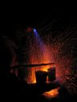 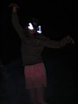 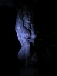 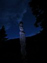 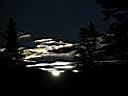 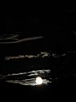 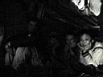
--- день второй --- Утро туманное, утро сырое. Странно, вчера небо звездное было. После завтрака-обеда появляются просветы в облаках, и хотя трава сырая, но до озер в цирке вполне можно было прогуляться, или хотя бы до верхней стоянки, на разведку. Но даже Валя не захотела составить мне компанию. И уже когда собрали все вещи, выпустили мышь из банки и пошли вниз, облака окончательно разнесло. Вот так мы упустили шанс подняться на Пик. Кто-то устал со вчерашнего подъема, кого-то ждали сегодня дела, кому-то надоело мокнуть. Такая вот команда собралась не очень охочая до подъемов. 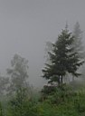 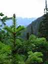 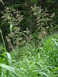 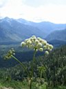 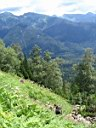 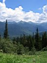 На спуске повстречали большую группу девушек, идущую до обзорной поляны, и много беременных ящериц. После спуска нас ждал арбуз в микрике и купание в озере. Мне вода показалась прохладной, а вот Женя и Валя (и кажется Инга тоже) похоже не мерзли и доплыли до другого берега играючи. Зато я играючи прыгал с тарзанки, удивлял и смешил народ экстримальными заворотами. На Теплом все-таки хорошо, еще бы народу поменьше было и вода потеплее. Хоть на Пик не поднялись, зато накупались. 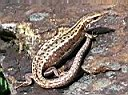 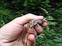 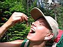 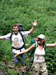 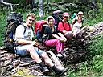 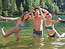 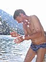
Все таки при хорошей погоде и физподготовке вполне реально за день сбегать на Пик и вернуться. А лучше на несколько дней зайти и побатониться-позагорать на горных озерах в цирке Тальцинского Пика. Июль 2005. Белокрылов А.Ю. Слюдянка. Фото Барышникова Е.В. и Белокрылова А.Ю. |
Кто ходил: 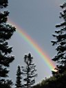 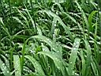 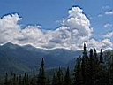 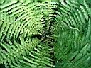 |